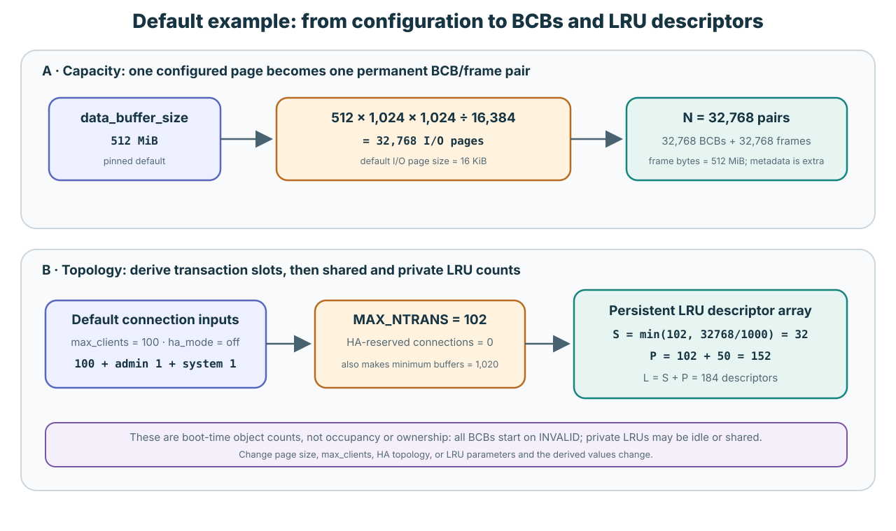
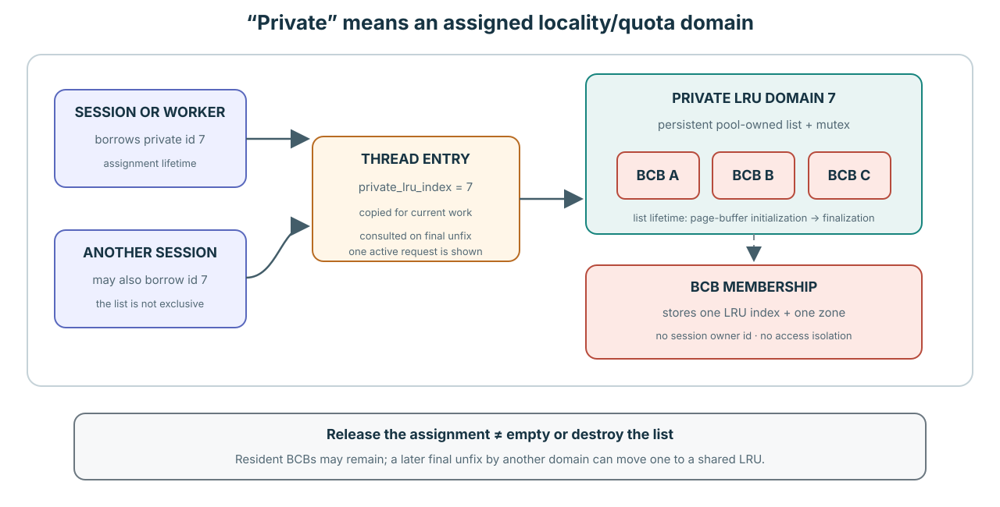
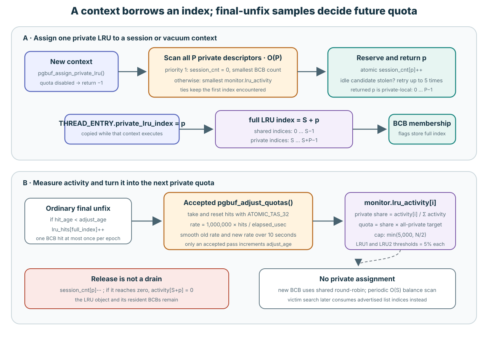
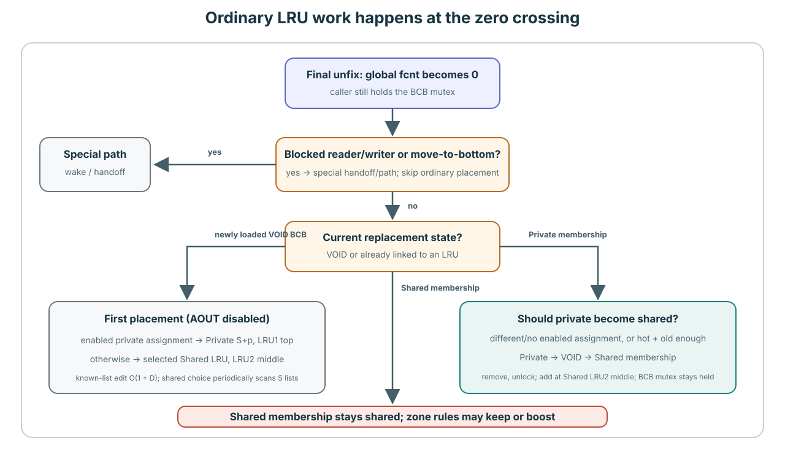
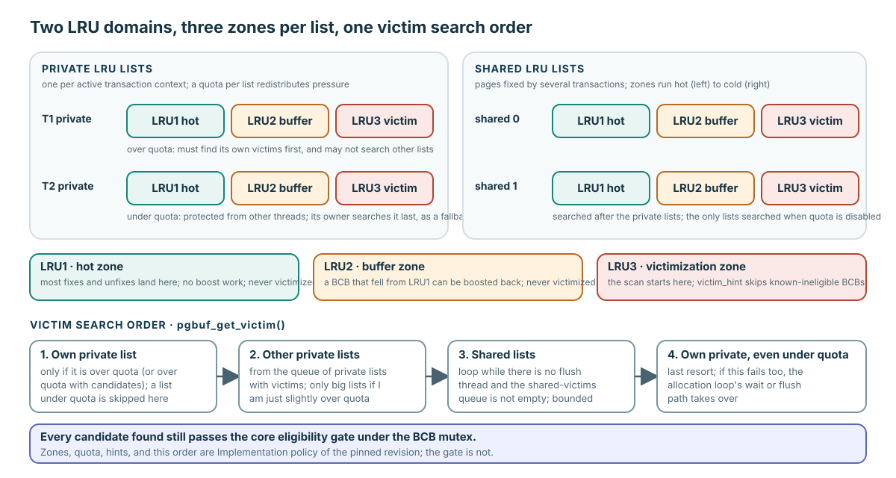

Private/shared는 같은 pool의 경쟁을 어떻게 나누는가
Private LRU는 실행 context와 연결된 resident 배치 및 quota 영역이다. Shared LRU는 공통 resident 배치 영역이다. 둘 다 같은 pool의 BCB를 연결한다. Private가 page의 배타적 접근 권한을 주는 것은 아니며, shared가 모든 list에 동시에 들어 있다는 뜻도 아니다.
이 구조는 하나의 전역 exact-recency list 대신 배치와 압력을 영역별로 관리한다. Private 영역이 없다면 반복 working set과 scan 사이의 경쟁을 다른 정책으로 다뤄야 한다. 그렇다고 correctness가 본질적으로 사라지지는 않는다. Shared-only 설계도 식별자, 사용자, dirty page를 보호할 수 있다. 성능상 이득은 workload에 따라 달라진다.
예: 새 page가 조건을 만족하는 첫 final unfix에 도달한다. Private assignment가 있으면 private LRU1에, 없으면 shared LRU2에 들어간다. 이후 다른 domain에서 접근하면 private member가 shared LRU2로 이동할 수 있다. BCB와 frame의 주소는 그대로다. 아래 상세 이동 규칙에서 나머지 조건도 확인한다.
Final unfix에서 일반적인 첫 배치 정하기
이 release-build 경로는 전체 fix count가 0이고 일반적인 VOID 배치이며, 대기 중인 reader/writer나 특별한 bottom 배치 요청이 없는 경우다. AOUT가 꺼진 고정 리비전에서 final-unfix context에 활성 private assignment가 있으면 top 분기로 private LRU1에 들어간다. 그렇지 않으면 middle 분기로 shared LRU2에 들어간다. Vacuum과 direct-victim에는 다른 경로가 있다. Debug build의 진입 이름은 pgbuf_unfix_debug다.
pgbuf_unfix
→ pgbuf_unlatch_bcb_upon_unfix
→ pgbuf_unlatch_void_zone_bcb
├→ pgbuf_lru_add_new_bcb_to_top
└→ pgbuf_lru_add_new_bcb_to_middle소스 위치 펼치기
고정 소스: page_buffer.c:3200 · page_buffer.c:6679–6749 · page_buffer.c:6896–6994
Pool은 list를 만들고 session은 list ID 하나를 빌립니다
기본값 152는 page-buffer startup 때 한 번 만들어지는 빈 private-LRU descriptor의 개수입니다. Transaction을 시작할 때 152개 list를 만드는 것이 아닙니다.
Pinned server path에서 session을 만들 때 private-local index 하나를 요청합니다. 그 session의 request들은 같은 index를 실행 thread로 복사합니다. 나중에 BCB가 해당 list에 들어갈 수 있지만, session이나 transaction이 그 BCB를 소유하는 것은 아닙니다.
Session의 번호와 BCB의 리스트 번호
Session은 private 영역 안의 번호를 받고, BCB는 shared 영역을 포함한 전체 배열의 번호를 기록합니다. 예를 들어 shared가 32개이면 private 번호 7은 전체 번호 39입니다.
세부 동작과 소스 펼치기

| 값 | 계산 예의 범위 | 용도 |
|---|---|---|
Transaction-table tran_index | LRU 범위가 아님 | Database 작업을 식별합니다. LRU array subscript로 쓰지 않습니다. |
Private-local p | 0부터 151 | Session/thread의 private_lru_index로 저장합니다. |
| Full LRU-array index | shared 0–31, private 32–183 | Resident BCB의 list-membership flag에 저장합니다. Private 변환은 S + p입니다. |
S = 32, P = 152, L = S + P = 184 p = 0 → full LRU index 32 p = 151 → full LRU index 183
PGBUF_LRU_INDEX_FROM_PRIVATE()가 이 변환을 수행합니다. BCB flag의 low 16 bit에는 full list index 하나가, 별도 flag bit에는 LRU zone 하나가 기록될 뿐 session owner는 기록되지 않습니다. 따라서 “private”은 access control이 아니라 locality/quota domain이라는 뜻입니다.
소스: page_buffer.c:174–216,510–623,1079–1114.
리스트는 session보다 오래 유지된다
리스트 descriptor는 pool 초기화 때 만들어집니다. Session 생성은 기존 리스트와 연결할 뿐이며, session 종료로 페이지들이 사라지거나 이동하지 않습니다. 리스트 개수는 설정과 실행 모드에 따라 달라집니다.
세부 동작과 소스 펼치기

- Page-buffer startup:
pgbuf_initialize_page_quota_parameters()가 P를 계산합니다. 자동 설정이면 P는MAX_NTRANS + 50입니다. - Pool construction:
pgbuf_initialize_lru_list()가 S + P개 descriptor를 한 번에 할당하고 모든 list를 빈 상태로 초기화합니다. - Session creation:
pgbuf_assign_private_lru()가 이미 존재하는 private list 하나와 session을 연결합니다. Descriptor, BCB, frame을 새로 만들지 않습니다. - Request execution: worker thread가 그 session의 local index를 잠시 전달받습니다. BCB membership은 request보다 오래 남을 수 있고 다음에 어느 transaction이 page를 fix하는지와 독립적입니다.
- Session destruction:
pgbuf_release_private_lru()가 association count를 줄입니다. List를 비우지도, 그 BCB들을 옮기지도 않습니다. - Page-buffer finalization: 이때 pool 소유 descriptor array가 마침내 파괴됩니다.
Vacuum에는 별도의 context lifetime이 있습니다. Vacuum이 활성화되면 initialization이 preallocated worker record에 ID를 배정하며, pinned source에는 shutdown 전에 호출되는 vacuum-side release가 없습니다.
max_clients = 100, HA off, admin slot 1개, system transaction 1개, compile-time vacuum-worker capacity 50을 가정합니다. 그래서 102 + 50 = 152입니다. 별도로 설정하는 worker-pool 기본값은 10이지만 이 공식은 capacity 50을 사용합니다. 이 가정이나 명시적 parameter를 바꾸면 P도 달라지고, stand-alone mode에서는 private LRU를 끕니다.소스: page_buffer.c:1713–1787,5740–5800,1921–1981,14513–14624; session.c:300–427,704–745; server_support.c:2069–2087; thread_entry_task.cpp:61–110; vacuum.c:1181–1191,1244–1277.
소스: automatic P sizing은 page_buffer.c:13941–13985, system_parameter.c:1569–1580,3802–3813,4171–4182, connection_globals.c:83–111,157–241, log_common_impl.h:48–52, vacuum.h:121–136에서 확인할 수 있습니다.
Session을 기존 private 리스트에 연결한다
연결된 session이 없고 BCB 수가 적은 리스트를 우선합니다. 그런 후보가 없으면 활동량이 낮은 리스트를 공유할 수 있습니다. 하나의 private LRU를 여러 session이 사용할 수 있습니다.
세부 동작과 소스 펼치기

- P개의 private descriptor를 순회합니다. BCB가 0개인 idle descriptor는 이미 최선의 primary candidate이므로 이 경우 일찍 끝나며, 그렇지 않으면 P개를 모두 봅니다.
- 연결된 session이 0개인 descriptor 중 BCB가 가장 적은 것을 기억합니다.
- 동시에 smoothed activity가 가장 낮은 descriptor를 fallback으로 기억합니다.
- Zero-session candidate를 우선하고 full index를 local p로 변환한 뒤
session_cnt[p]를 atomic increment합니다. - 다른 assignment가 그 idle list를 동시에 가져갔다면 되돌리고 최대 다섯 번 retry합니다. Retry budget 뒤에는 공유를 허용합니다.
- 각 request는 p를
THREAD_ENTRY.private_lru_index로 복사합니다. Page fix마다 assignment를 다시 계산하지 않습니다.
“Session 0개”가 “page 0개”라는 뜻은 아닙니다. 여러 session이 같은 private LRU를 사용할 수 있고, 세션이 해제되어도 resident BCB를 비우거나 옮기지 않습니다. 이 알고리즘은 policy domain을 분산할 뿐 transaction마다 private page cache나 BCB 소유권을 할당하지 않습니다.
소스: page_buffer.c:14513–14624; session.c:729–744; server_support.c:2069–2087.
첫 배치는 마지막 unfix 시점에 정한다
새로 읽은 VOID BCB의 일반 경로에서, 전체 fix count를 0으로 만든 실행 context에 활성 private assignment가 있으면 private LRU1, 없으면 shared LRU2로 배치합니다. 대기자, bottom 배치 요청, vacuum, direct-victim은 별도 처리가 있습니다.
세부 동작과 소스 펼치기

“Private-domain page”라는 표현은 부정확합니다. Private domain은 page나 BCB의 고유 속성이 아닙니다. 정확한 대상은 final-unfix execution context가 enabled private-LRU assignment를 가진, 새로 load된 VOID BCB입니다.
Session은 local p를 받고, request worker는 이를 THREAD_ENTRY.private_lru_index로 전달받습니다. Private chain이 존재하고 p != -1이면 pgbuf_thread_variables_init()이 m_is_private_lru_enabled를 설정합니다. Global fcnt를 0으로 만드는 첫 eligible final unfix는 PGBUF_THREAD_HAS_PRIVATE_LRU()를 확인하고, enabled assignment를 full index S+p로 변환합니다.
newly loaded BCB: VOID
|
| first eligible final unfix, global fcnt -> 0
v
final-unfix context has enabled private-LRU assignment?
| yes | no
v v
private list S+p, LRU1 top selected shared LRU, LRU2 middle
BCB에는 session owner나 transaction owner field가 없습니다. LRU에 연결된 뒤에는 현재 full LRU index와 zone만 기록합니다. 하나의 private LRU를 여러 session이 공유할 수 있으므로 private LRU는 ownership domain이 아니라 locality/quota domain입니다.
AOUT-off가 두 branch를 없앤 것은 아닙니다. 사라진 것은 ghost hit/miss에 따른 세분화이며, 특히 AOUT miss를 private LRU2 middle에 넣는 retained branch는 현재 dormant 상태입니다. Admission ranking은 이미 load된 BCB의 첫 LRU 위치만 고릅니다. 이전 victim을 고르거나 ownership을 증명하거나 frame reuse를 허가하지 않습니다.
Stand-alone mode이거나 private chain이 비활성화되어 있으면 enabled private-LRU assignment를 가진 context가 없으므로 ordinary first placement는 selected shared LRU2 middle만 사용합니다.
소스: session.c:729–744; server_support.c:2069–2087; page_buffer.c:499–543,1079–1105,1545–1560,6713–6750,6885–6994,9694–9830.
Quota는 재사용 활동의 표본을 바탕으로 조정한다
접근이 활발한 영역과 덜 활발한 영역의 경쟁을 조정합니다. 활동량은 정확한 hit 수나 session 수가 아니며, timer가 실행될 때마다 quota가 바뀌는 것도 아닙니다.
세부 동작과 소스 펼치기
먼저 Lecture 12에서 exact recency, 리스트 이벤트 age, quota epoch를 구분합니다. 각 필드는 서로 다른 정책 판단에 쓰이며 전체 page의 마지막 접근 시각을 뜻하지 않습니다.
Ordinary final unfix 때 pgbuf_bcb_register_hit_for_lru()는 accepted adjustment epoch 하나에서 BCB 하나가 최대 hit 하나만 기여하게 합니다. Accepted pgbuf_adjust_quotas()만 adjust_age를 increment합니다. Daemon이 100 ms마다 시도해도 guard가 early return할 수 있으므로 반드시 increment되는 것은 아닙니다.
Accepted pass는 ATOMIC_TAS_32로 각 LRU의 lru_hits를 가져오면서 0으로 reset하고, hit를 초당 rate로 바꾼 뒤 private activity를 10초에 걸쳐 smoothing합니다. 그다음 activity share로 quota를 조정합니다. Lock wait를 제외한 structural work는 O(T + L + D)입니다.
이 값은 CPU time도, 연결된 session 수도, resident BCB 수도, 정확한 fix count도 아닙니다. Assignment는 zero-session descriptor가 없을 때만 fallback 기준으로 이 값을 봅니다.
소스: page_buffer.c:14251–14511,16580–16610,16994–17009,17146–17161.
Private에서 shared로 옮겨도 frame은 같다
일반 final-unfix 경로에서 다른 domain의 접근이나 같은 domain의 hot-and-old 조건이 private → shared 이동을 유발할 수 있습니다. 먼저 기존 리스트에서 빼고 shared LRU2에 넣으며, frame 자체를 복사하는 것은 아닙니다. Shared page가 private 사용자의 접근만으로 private로 돌아가지는 않습니다.
세부 동작과 소스 펼치기
Hit 후 유지·승격·이동이 달라지는 이유를 추적하기 전에 교과서 LRU와 CUBRID의 비교로 돌아가 큰 흐름을 확인하세요.
연속된 구성 예제에서 스캔에 따른 냉각과 재사용을 예측한 뒤 B가 같은 P에 접근하는 과정을 따라가세요.
이 규칙은 이미 LRU에 있는 BCB의 이후 이동이며 첫 배치를 다시 설명하는 것이 아닙니다. Ordinary movement는 unfix가 global fcnt를 0으로 바꿀 때만 일어납니다. pgbuf_should_move_private_to_shared()는 final-unfix한 thread의 full private index와 BCB의 private list가 다를 때—enabled assignment가 없는 context도 포함합니다—또는 같은 domain의 BCB가 hot이면서 충분히 old일 때 migration을 요청합니다.
경로는 private LRU → VOID → shared LRU2 middle입니다. Source는 private-list mutex 아래서 unlink하고 mutex를 놓은 뒤 pgbuf_get_shared_lru_index_for_add()로 destination을 골라 shared-list mutex 아래서 link합니다. 두 list operation 사이에도 BCB mutex는 계속 유지됩니다.
이미 shared LRU에 있는 BCB는 private assignment를 가진 context가 접근했다는 이유만으로 private LRU로 이동하지 않습니다.
Known-node unlink/link는 O(1)에 D개의 zone demotion이 더해져 O(1 + D)입니다. Shared destination 선택은 amortized O(1)이고 주기적으로 O(S) balance scan을 수행하므로, lock wait를 제외한 migration에는 periodic O(S + D) case가 있습니다.
소스: page_buffer.c:6636–7038,8988–9063,10303–10417.
승인된 quota 조정을 계산하고, INVALID를 명시적으로 소진한 뒤 A가 처음 탐색할 victim 리스트를 선택해 보세요.
먼저 list를 고르고 그다음 eligible BCB를 살핍니다

pgbuf_get_victim()은 다음 순서를 적용합니다.
- Quota를 넘은 own private list: 실행 thread의 S + p list가 quota 조건상 너무 클 때만 먼저 시도합니다. Quota를 충분히 많이 넘으면 빌려 볼 other-private candidate의 범위도 제한합니다.
- 광고된 other-private list 하나: Private quota와 page-flush daemon을 사용할 수 있으면 private-list queue에서 candidate full index 하나를 소비합니다. 모든 session을 순회하지 않습니다.
- 광고된 shared list 하나: Shared-list candidate index를 소비합니다. Private quota가 꺼져 있으면 이 domain만 search합니다. Page-flush daemon이 없으면 guarded branch가 shared advertisement를 더 소비할 수 있습니다.
- Own private fallback: Own list가 quota 아래라 1단계에서 시도하지 않았다면, 여전히 quota 아래여도 마지막에 search합니다.
선택한 index는 각각 pgbuf_get_victim_from_lru_list()에 전달됩니다. 이 함수는 선택한 list의 LRU3만 최대 1,000 position까지 보고, dirty, flushing, fixed, waiter 존재, reservation 중, mutex busy인 BCB는 여전히 거부합니다.
Verified mechanism: 정정한 VS-19는 일반 private 큐에서 꺼낸 번호를 big-private 큐에 넣는 최초 등록 경로를 확인합니다. 큐의 생명주기와 용량에서 분기를 설명하며, 진행이나 공정성을 보장하지는 않습니다.
소스: list selection은 page_buffer.c:9067–9253,16370–16567에 있습니다. 소스: selected-list eligibility와 revocable direct-victim path는 page_buffer.c:8181–8403,9256–9538,15420–15652에 있습니다.
Session이 끝나면 리스트와 페이지는 어떻게 될까?
S = 32, P = 152라고 합시다. Session A가 local p = 7을 받아 full private-list index는 39입니다. Request가 page X를 load하고 list 39에 final-unfix합니다. 그 뒤 session A가 끝나도 X는 그 자리에 남습니다. 나중에 session B가 p = 7을 받고 X에 접근합니다.
두 session을 위해 LRU를 새로 만들지 않은 이유, B가 X에 접근할 수 있는 이유, release가 X를 옮기지 않은 이유, victim selector가 어느 full index를 쓰는지 설명해 보세요. 그다음 A의 list가 quota 아래라고 가정하고 own list를 정확히 언제 search하는지도 답해 보세요.
Session보다 오래 유지되는 list
Session A가 local private-list ID 7을 반환해도 page X는 resident로 남아 있습니다. 나중에 ID 7을 받은 session이 X를 소유하거나 새 LRU를 만드는 것일까요?
설명 펼치기
아닙니다. Descriptor는 pool 소유이고 session은 list ID와의 연결을 빌립니다. 그 연결을 반환한다고 resident page가 이동하거나 다음 session에 소유권이 생기지는 않습니다. Page 접근은 기존 fix/latch protocol을 따르며, victim 선택에는 shared-index offset을 더한 full list index를 사용합니다.